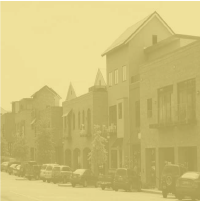
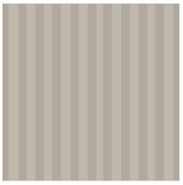
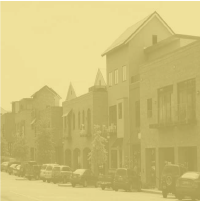
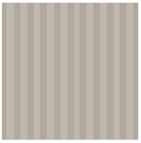
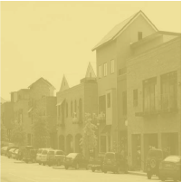
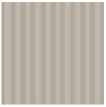

Textures
Textures, patterns and background images are used to add personality and give the site an overall polished look.
 



These are the colors used on Downtown Dental's site. Copy the hexcodes to use the color. Secondary colors are shades of the primary colors, used to create greater contrast between elements. Changes in opacity are accepted as well.
#3F3A34
#E0DACD
#F2DD78
#FFFFFF
#817A6E
#B2AA9D
#C0B9AD
#E2DACD
#EEEE98
Website elements for Downtown Dental's site include the navigation bar, icons, buttons, and a divider. These are visual elements used to direct, label, highlight, and divide content, making the user's experience fluid and enjoyable.
Home
About Us
Services
Financial
Patients
Contact Us
Blog
Textures, patterns and background images are used to add personality and give the site an overall polished look.


The typeface used is Candara. All line height is 1.5 times the font-size. Please use the following sizes.
Paragraphs are Candara Regular at 18px.